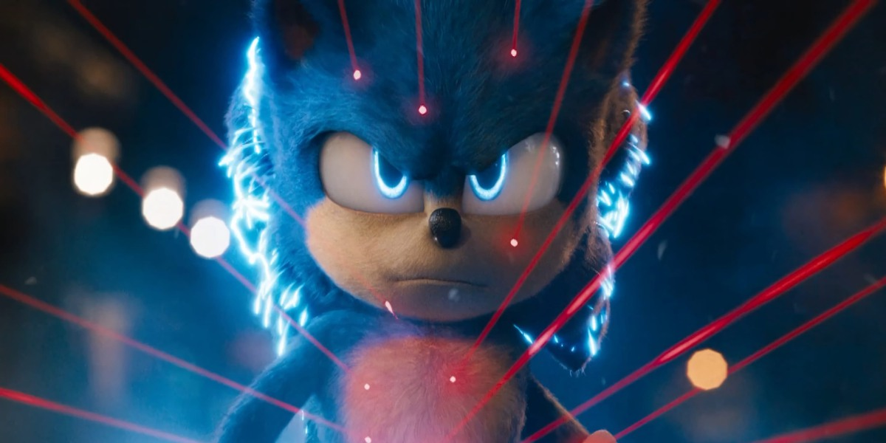

About Sonic
Sonic is a blue hedgehog with the ability to run extremely fast. But because of this ability he's constantly hunted by the bad guys. He's only save thanks to his magic ring which let him travel trough world, thus dissapearing without a trace.
Sonic charging his energy
Sonic's Characteristics
- He's very funny
- He's Blue
- He's trying to find a friend
Sonic's Friend
Sonic has many amazing friends. His best friend is probably Tails. Click on the links below to read more about them:
- Tails
- Knuckles
- Amy Rose